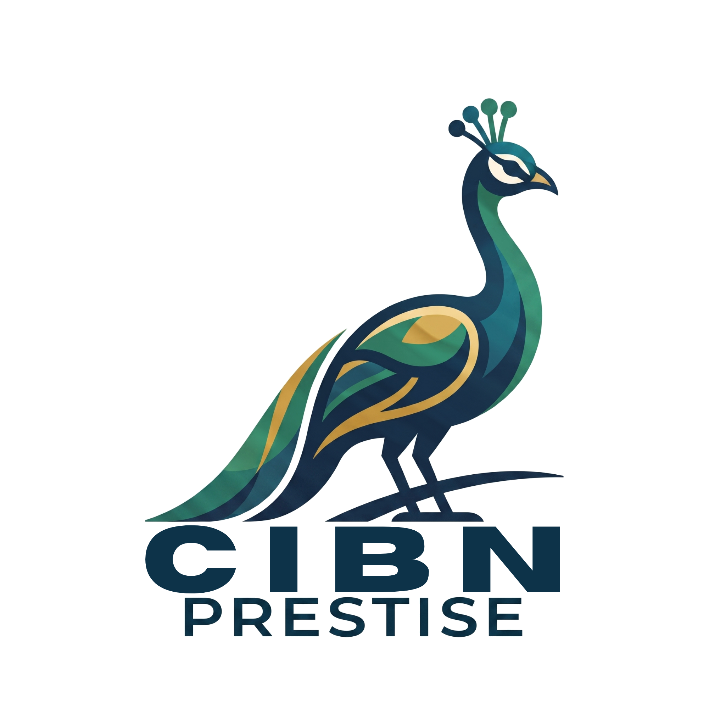

CIBN PRESTISE memadukan riset pasar mendalam, teknologi analisis real-time, dan pendampingan personal — untuk mereka yang menganggap serius setiap keputusan finansial.

Setiap keputusan didukung oleh infrastruktur analisis yang dibangun untuk kecepatan, akurasi, dan keamanan.
Model prediktif membaca ribuan titik data pasar setiap detik untuk menyaring sinyal yang relevan.
Feed harga dan likuiditas tersinkron langsung dari berbagai bursa global tanpa jeda berarti.
Enkripsi end-to-end dan audit berkala menjaga data serta strategi keanggotaan Anda tetap privat.
Server terdistribusi menjaga latensi rendah dan keandalan akses di manapun Anda berada.
Pengalaman nyata dari anggota yang telah menjadikan CIBN PRESTISE bagian dari perjalanan finansial mereka.
Riset mendalam, teknologi real-time, dan pendampingan personal — disatukan dalam satu ekosistem investasi yang dirancang untuk hasil yang serius.
Lihat Paket KeanggotaanDari langkah pertama hingga pendampingan privat — setiap paket dirancang untuk level dan tujuan yang berbeda.